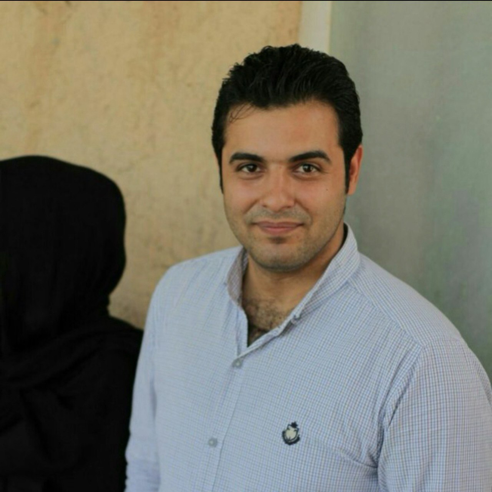

Vahid Nourozi

- Ph.D. Candidate, Klipsch School of Electrical and Computer Engineering, New Mexico State University
- Intern Researcher in Quantum Error Correction, Mitsubishi Electric Research Laboratories (MERL)
I am a Ph.D. candidate in the Klipsch School of Electrical and Computer Engineering at New Mexico State University, USA, and an Intern Researcher in quantum error correction at Mitsubishi Electric Research Laboratories (MERL). My research focuses on quantum computing, quantum error correction, and quantum algorithms. I hold a Ph.D. degree in Mathematics from the Amir Kabir University of Technology (Tehran Polytechnic), Iran, which I completed in 2021. During my doctoral studies, I was awarded a TWAS fellowship, enabling me to conduct research at Universidade Estadual de Campinas (Unicamp) in Brazil, where I also earned a Ph.D. in Mathematics.
Research
My research centers on quantum error correction, with an emphasis on constructing structured quantum codes and designing practical decoders for fault-tolerant quantum computing. I combine coding theory, finite fields, algebraic geometry, graph-based methods, and stabilizer/CSS theory to develop quantum LDPC, bivariate bicycle, and quantum convolutional codes with useful parameters and implementable syndrome structures.
- Quantum code construction: algebraic, combinatorial, and voltage/lift-based constructions for quantum LDPC and convolutional codes, including bivariate bicycle codes and constructions derived from difference triangle sets.
- Decoder design: belief propagation, sequential BP, OSD-assisted decoding, reinforcement-learning-guided search, and multi-branch methods for stabilizer and quantum LDPC codes.
- Scalable evaluation: end-to-end decoder pipelines for syndrome generation, residual-syndrome tracking, candidate search, logical-error testing, and frame-error-rate estimation under depolarizing and circuit-level noise.
My goal is to connect rigorous quantum-code construction with efficient, scalable decoding algorithms that improve the reliability of quantum memories and support practical fault-tolerant quantum computation.